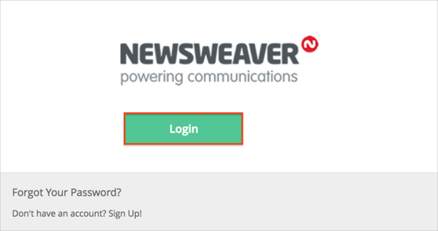

Contact the Newsweaver Support team and request that they enable SAML 2.0 for your account.
Include the following information with your request:
Specify the type of configuration, either Admin or Microsite.
Metadata URL: Copy and paste the following:
Sign into the Okta Admin dashboard to generate this value.
The Newsweaver Support team will process your request and provide you with an Account Code value.
In Okta, select the General tab for the Newsweaver app, then click Edit.
Enter the Account Code value you received from Newsweaver into the corresponding field.
Click Save.
Done!
Notes:
SP-initiated flows and IDP-initiated flows are supported.
Just In Time (JIT) provisioning is not supported.
Open the following URL: https://login.newsweaver.com/login/sso/[yourAlias]/login.do.
Click Login:

SP-initiated flows are supported.
IDP-initiated flows and Just In Time (JIT) provisioning are not supported.
The SP-initiated flow is supported on the Microsite when a user receives an email to perform an action.